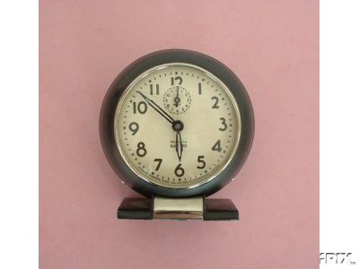

<html>
<head>
<title>The Annotated "Cumberland Blues"</title>
</head>
<body>
<i>"I can't help you with your troubles If you won't help with mine"</i>

<h2>The <i>Annotated</i> "Cumberland Blues"</h2>
An installment in <a href="gdhome.html"> The <i>Annotated</i> Grateful Dead Lyrics.</a><br>
By <a href="david.html">David Dodd</a><br>
1997-98 Research Associate, Music Dept., University of California, Santa Cruz
<hr>
<a href="copyrigh.html">Copyright notice</a>
<hr>
<a href="#title"><b>"Cumberland Blues"</b></a><br>
Words by Robert Hunter; music by Jerry Garcia and Phil Lesh<br>
Copyright Ice Nine Publishing; used by permission
<p>
<blockquote>
I can't stay much longer, <a href="#melinda">Melinda</a><BR>
The sun is getting high<BR>
I can't help you with your
troubles<BR>If you won't help with mine<BR>
<BR>
I gotta get down<BR>
I gotta get
down<BR>
Got to get down to the mine<BR>
<BR>
You keep me up just one more night<BR>
I can't sleep here no more<BR>
<a href="#ben">Little Ben clock</a> says quarter to eight<BR>
You kept me up till four<BR>
<BR>
I gotta get down<BR>
I gotta get down<BR>
Or I can't work there no more<BR>
<BR>
Lotta poor man make a five dollar bill<BR>
Keep him happy all the
time<BR>
Some other fellow making nothing at all<BR>
And you can hear him cryin...<BR>
<BR>
"Can I go buddy<BR>
Can I go down <BR>
Take your shift at the mine?"<BR>
<BR>
Got to get down to the <a href="#mine">Cumberland mine</a><BR>
That's where I mainly spend my time<BR>
Make good money/five dollars a day<BR>
Made any more I might move away -<BR>
<BR>
Lotta poor man got the <a href="#cumberland">Cumberland</a> Blues<BR>
He can't win for losin<BR>
Lotta poor man got to walk the line<BR>
Just to pay his union dues<BR>
<BR>
I don't know now<BR>
I just don't know<BR>
If I'm goin back again<BR>
I don't know now<BR>
I just don't know<BR>
If I'm goin back again 
</blockquote>
<hr>

<h3><a name="title">"Cumberland Blues" </a></h3>
Musical details:
<ul>
<li>Key: G
<li>Time signature: Cut time
<li>Chords used: G, G7, F#, B-flat, B, A, A-flat, D, C, F, Am7, C7, Em
<li>Songbook availability:
<ul>
<li><cite><a href="songbook.html#gdvol1">Grateful Dead</a></cite>
<li><cite><a href="songbook.html#workingmans">Classic Grateful Dead: Selections From "Workingman's Dead"</a></cite>
<li><cite><a href="songbook.html#authvol1">Grateful Dead: Authentic Guitar Classics Vol. 1</a></cite>
<li><cite><a href="songbook.html#anthologyII">Anthology, vol. II</a></cite>
</ul>
</ul>
Recorded on
<ul>
<li><cite><a href="discog2.html#workingman">Workingman's Dead</a></cite>
<li><cite><a href="discog1.html#europe">Europe '72</a></cite>
<li><cite><a href="discog2.html#trip">What a Long, Strange Trip It's Been</a></cite>
</ul>
<p>
A fairly steady number in the repertoire between 1969 and 1974, it was absent for quite a while, reappearing in 1981, and played a few times a year ever since.
<p>
Covered by:
<ul>
<li>The Cache Valley Drifters on <cite>Step Up to Big Pay</cite> (Flying Fish 220), 1979.
<li><a href="http://www.cdnow.com/cgi-bin/mserver/SID=NEW/dm=t/pg=35/page=popsearch/pcai=2300+2060+2" target="new">The Dead Ringers</a> on their eponymous LP, 1993.
</ul><p>
Used as the title of a musical based roughly on a number of Garcia/Hunter tunes, <a href="http://www.cumberlandblues.com/" target="new">"Cumberland Blues,"</a> which debuted in San Jose in June, 1998.

<hr>
<h3><a name="melinda">Melinda</a></h3>
This note from a reader:
<blockquote>
Subject: an addition to your motifs and thematic index<br>
Date: Thu, 08 May 1997 16:49:47 -0400<br>
From: Melinda Belleville <sysmel@pop.uky.edu><br>
Organization: University of Kentucky
<p>
David:
<p>
I've been wanting to write you for some time to tell you how much I
*love* your site. You (and everyone that has contributed) have put an
incredible amount of work into this.
<p>
I'm just getting around to exploring some of the essays after tearing
myself away from following some of the annotations to some of my
favorite songs.
<p>
I'd like to contribute a small item to your names category. I don't know
what your criteria is for listing items in your categories but you might
include Melinda from Cumberland Blues.
<p>
I was always intrigued how Hunter came to use Melinda not only in CB but
also in at least 2 other poems of his. I wondered if he had a long lost
love or someone else in his past with the name.
<p>
When he first put up his web page and listed his e-mail address, I wrote
to him to ask him about it. At that time he was still able to answer his
mail and I was quite surprised to get a reply back from him. Alas, no
lost love, just someone he knew in high school with that name. He said
he always loved the name and thought it was one of the most
euphonious(sp?) names he had ever heard. So that is how my name has come
to be in a Grateful Dead song. A fact I'm quite proud of, not to
mention, it is a song about a region of Kentucky and I'm from Kentucky!
<p>
Just thought I'd contribute a piece of information to your wonderful
site. 
<p>
Take care<br>
Melinda
<pre>
*******************************************************************
Melinda L. Belleville
systems programmer/Tech1
Rm. 217 McVey Hall 
University of Kentucky                      JJG
606-257-2240                           8/1/42-8/9/95
mailto:sysmel@pop.uky.edu
*******************************************************************
</pre>
</blockquote>
<hr>
<h3><a name="cumberland">Cumberland</a></h3>
A geographical name with a rich history. The Cumberland being referred to in the song is 
probably the Cumberland Mountains, or, possibly, the county or town (located in Harlan County) 
of <a href="http://wings.buffalo.edu/cgi/xeroxgw?Cumberland+KY&36&58&82&59" target="new">Cumberland, 
Kentucky</a>. All place names in the region stem from the name of the Cumberland River, which 
"flows through southern Kentucky and northern Tennessee, 687 miles long," according to 
<cite><a href="biblio.html#apd"> The American Places Dictionary</a></cite>. 
(Also according to this source, the river was in turn named "for the county of Cumberland, 
England. Name made popular by Prince William Augustus (1721-65), Duke of Cumberland, victor 
over Highlander Scots at Culloden in 1746." Interestingly, Cumberland County, England, is an 
important mining region, principally for iron ore, but also for coal!)
<p>
Also in the Appalachians is the Cumberland Gap, a mountain pass, which is the title of a folk 
song.
<p>
There are eight Cumberland counties in the U.S., in Illinois, Kentucky, Maine, New Jersey, 
North Carolina, Pennsylvania, Tennessee, and Virginia. 
<p>
Another song worth a look is <!a href="http://pubweb.parc.xerox.com/digitrad/song%3DCUMBFARM" target="new">"Those 
Old Cumberland Mountain Farm Blues"</a>. [via <cite><!a href="http://pubweb.parc.xerox.com/digitrad" target="new">Digital 
Tradition.</a></cite>]
<p>
This note from a reader:
<blockquote>
Subject: cumberland<br>
  Date:  Mon, 12 May 1997 10:35:28 -0400<br>
<p>
Hi, I'm borrowing a friends computer, my email is thedrick@miworld.net.
I live in Cumberland, Maryland.  Cumberland is the home of the first
national road the "cumberland road". The city was originally Fort
Cumberland, and George Washington was stationed here in his younger
days.  Approximately nine miles from the city are several hundred coal
mines, some of which continue to be mined today.  Cumberland also has
traditionally been a very pro-labor union area.  Don't know if this is
of interest as it relates to the Grateful Dead song, but thought I would
share it.  <br>
thank you,  a friend of the devil...<br> 
Jeff Hedrick
</blockquote>
<hr>
<h3><a name="ben">Little Ben clock</a></h3>

Close to an actual brand name of an alarm clock, the <a href="http://clockhistory.com/westclox/products/ben/index.html">Westclox Baby Ben</a>, used as a facetious take-off on 
<a href="http://www.cs.ucl.ac.uk/misc/uk/london/london_photos2.html" target="new">Big Ben</a>, in London. 
Big Ben, according to <cite><a href="biblio.html#brewers">Brewer's Dictionary of Phrase and 
Fable</a></cite>, is
<blockquote>
"The name given to the large bell in the Clock Tower (or St. Stephen's (!) Tower) at the 
Houses of Parliament. It weighs 13 1/2 tons, and is named after Sir Benjamin Hall, Chief 
Commissioner of Works in 1856, when it was cast."
</blockquote>
<hr>
<h3><a name="mine">Cumberland Mine</a></h3>
An infamous coal mine in Nova Scotia. <cite>Sing Out!</cite> magazine makes this note about 
the song by Peggy Seeger, <!a href="http://pubweb.parc.xerox.com/digitrad/song%3DSPRINGHI" target="new">"The 
Springhill Mine Disaster"</a>:
<blockquote>
"Peggy Seeger wrote this song after reading about the terrible mine disaster in Spring Hill, 
Nova Scotia, in the latter part of 1958. This was the world-famous tragedy in which a number 
of trapped miners were miraculously rescued after eight days of entombment." (--<cite>The 
Collected Sing Out Reprints</cite>, v 1-6, p. 202)
</blockquote>
<hr>
keywords: @work, @blues, @union<br>
DeadBase code: [CUMB]
<hr>
First posted: August 24, 1995<br>
Last revised: February 4, 2003
<pre>




























</pre>
</body>
</html>